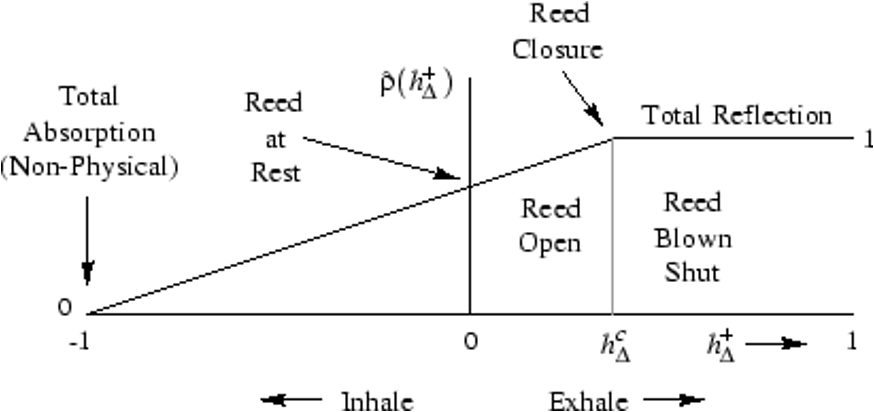

Next: References Up: Main Previous: Results

In my project, I have successfully implemented a waveguide clarinet model and compared it to the stk version. Both seem to have similar sounds however the stk variant is more efficient in its computation, thanks to the use of a reedtable as a reed model and a commuted delay line. Surprisingly though, the process time of the stk model was 0.0081 seconds to generate a sound while the MATLAB version took 0.0021 seconds to complete which is lower than expected when comparing. Without further investigation into the stk model, I cannot say for certain why the MATLAB version is quicker than the stk model. However, I am theorizing that it is due to the amount of overhead in the stk model. The clarinet class is nested within multiple other classes and has a reverb applied to it, all this can contribute to its process time. That and I time the program from the terminal.
That being said, their process times are low enough that both can be run in real time. In particular, it is more beneficial to the MATLAB version as it is more computationally intense. The downsides are that it does not use as many approximation compared to the stk model and thus requires more tuning.
Finally, the clarinet model must grow. I can continue to expand it by implementing a bell model for the low notes of the clarinet, and a tone hole model.

|
|
| Made by Maxwell Gentili-Morin. |